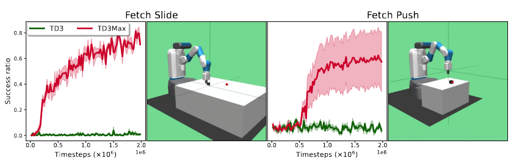
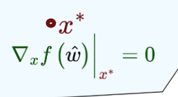
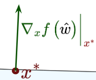
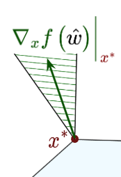

Research background
Past research
Research from my PhD and earlier work in computational neuroscience.
Maximum-reward objectives
Reinforcement learning
In my RL research, I was particularly interested in formulating “correct” optimization objectives. A task can be easy to describe in words, yet surprisingly difficult to translate into a reward function. Getting as close as possible to a goal, for example, is not quite the same as accumulating rewards along the way.
In my work on maximum-reward RL, I studied an alternative: optimize the best reward obtained during an episode. The policy then needs to know the maximum reward seen so far. By adding this to the state, I derived a Bellman operator and policy gradient results that let us use modern RL algorithms. I evaluated the approach on maze navigation and robotic manipulation tasks, and presented the work at ICML 2024.
Constraints were another motivation. Keeping the next action safe is not enough if it leaves the agent unable to avoid a collision later. This led me to ask whether we could constrain the highest cost along a trajectory, rather than its accumulated cost.
Navigating moving obstacles
0.0 s
Learning to make better decisions
Optimization & decision-focused learning
My PhD revolved around optimization under uncertainty: we need to make a decision, but some of the information needed to optimize it is unknown. I was interested in combining the explicit constraints of mathematical optimization with the ability of machine learning to generalize from data.
Prediction quality is not always what we want. If a prediction is going into an optimization problem, what matters is the quality of the resulting decision. In decision-focused learning, I trained predictive models through the optimization problem itself.
Even when a convex problem can be differentiated exactly, its gradients can be useless for learning. I studied the geometry behind this: as more constraints become active, the solution has fewer directions in which it can move. Changes in the prediction may leave the decision unchanged, giving a zero gradient.
To address this, I worked on a quadratic proxy and local smoothing of the constraints to approximate the Jacobian. The aim was to give the predictive model a useful learning signal even when the original optimization problem returned a zero gradient.
No active constraints

Free to move
One active constraint

Can slide along the edge
Two active constraints

Can remain pinned at the corner
One application was electric-vehicle charging in DC microgrids. The aim was to satisfy charging demand while accounting for generation costs and grid constraints, even when the exact locations of connected vehicles were unknown. I developed surrogate grid models for this partially observed problem, and worked with DC Opportunities to prototype and evaluate the method in our university’s field lab.
At Nokia Bell Labs, I applied decision-focused learning to time-series prediction for home energy management, evaluating predictions by the decisions they produced. Across these projects, the recurring question was how to reformulate a problem so that we could learn and optimize what actually mattered.
Deep learning & vocal dialects
Naked mole-rats & vocal dialects
Before my PhD, I worked at the Max Delbrück Center in Berlin, applying deep learning to study naked mole-rat vocalizations.
A large part of my work was making these recordings usable for analysis: detecting calls, extracting acoustic features, and classifying vocalizations at scale. The automated pipeline reduced manual annotation effort by approximately 80%.
My machine-learning analyses contributed to evidence that naked mole-rat colonies have distinct vocal dialects, leading to our publication in Science.